Especialista BIM & Coordinador de Proyecto
El relevamiento reveló un desnivel de 1 metro que generaba un conflicto estructural serio, en una vivienda con daño hídrico irreparable — y una huella que excedía la línea municipal. Una familia numerosa dependía de ese espacio, así que cada decisión técnica era también una decisión social.
Organicé la obra en dos bloques por etapas, usando el propio quiebre de nivel como eje del proyecto: la familia permaneció en el bloque existente mientras se levantaba el Bloque 1 con servicios completos, y se mudó recién cuando el Bloque 2 pudo construirse sobre la huella demolida. Negocié que la familia aportara su propia mano de obra en la demolición parcial, aprovechando su experiencia en construcción para reducir plazo y costo.
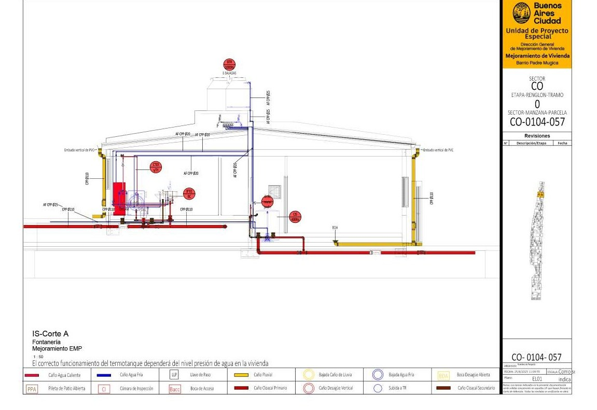
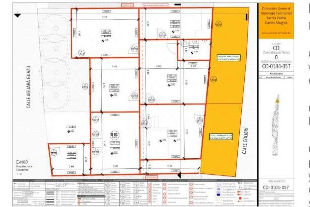
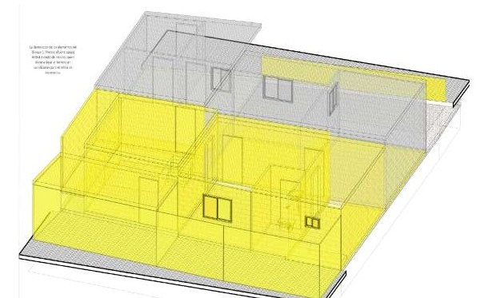
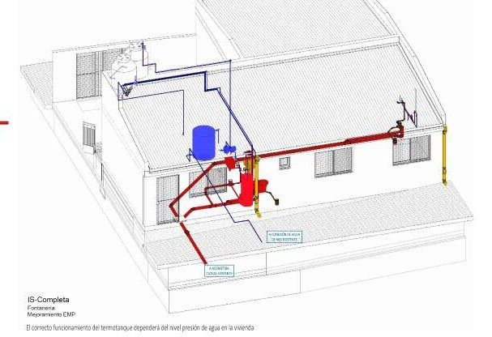
Un amparo judicial fijó un plazo perentorio. Más allá de la presión legal, los dos lotes linderos tenían riesgo estructural real y un conflicto activo entre vecinos — el proyecto tenía que entregar una solución de vivienda segura y, al mismo tiempo, mediar ese conflicto.
Las dos construcciones existentes estaban discontinuadas y sin posibilidad de reparación, así que la demolición total fue el punto de partida. Propuse dos edificios gemelos, construidos con especificaciones idénticas — una decisión de diseño que resolvió el conflicto vecinal de forma directa: cada familia recuperó los metros cuadrados que le correspondían, reconstruidos como espacio digno y listo para habitar.
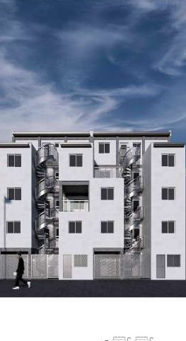
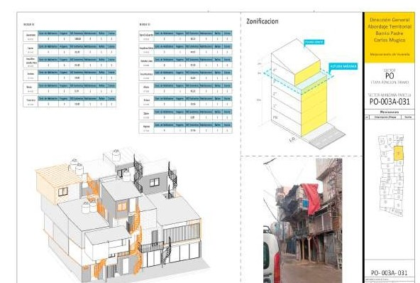
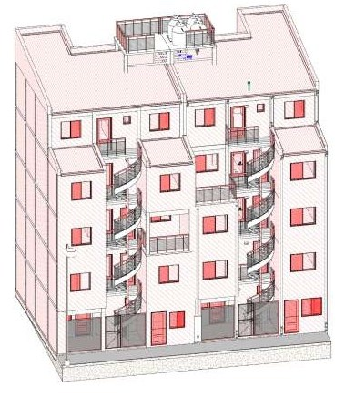
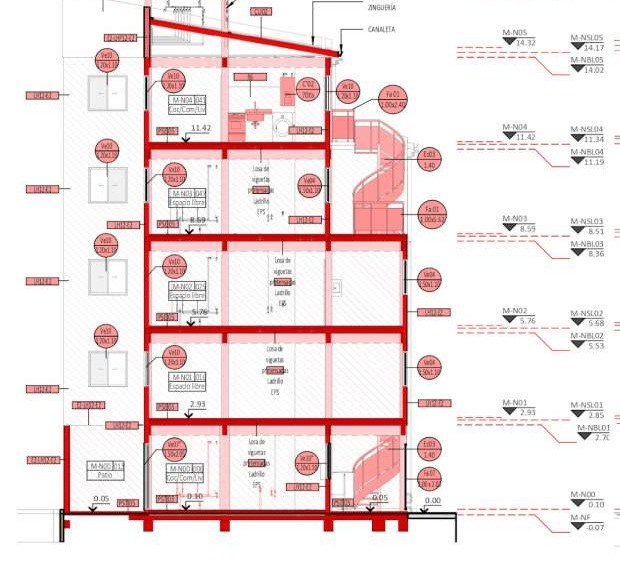
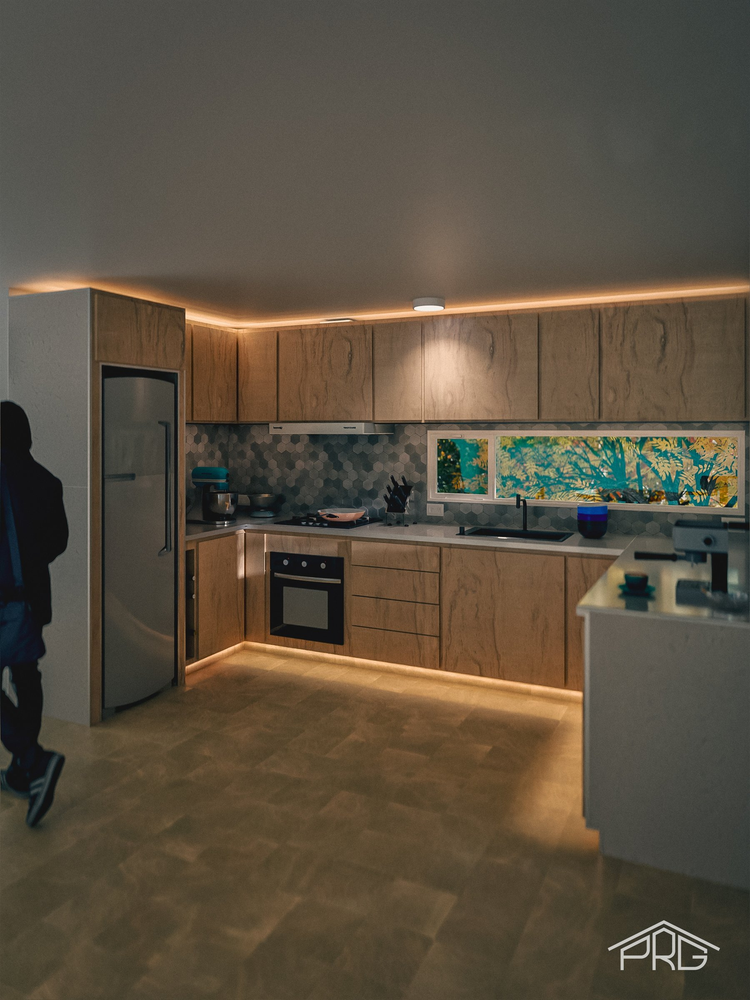
Una cocina de cuatro módulos, diseñada alrededor del stock de porcelanato existente del cliente. Modelé todo el mueble en SketchUp, lo rendericé en Twinmotion para la aprobación del cliente, y produje yo mismo el legajo de fabricación: despiece pieza por pieza y un manual de armado construido a partir de secuencias axonométricas explotadas — la misma disciplina de documentación que desarrollé para proyectos BIM, aplicada acá al mobiliario.
Cada unión, holgura y especificación de herraje del manual remite a un único documento fuente de verdad, así que una corrección en obra actualiza todo el legajo en vez de dejar una lámina desactualizada.
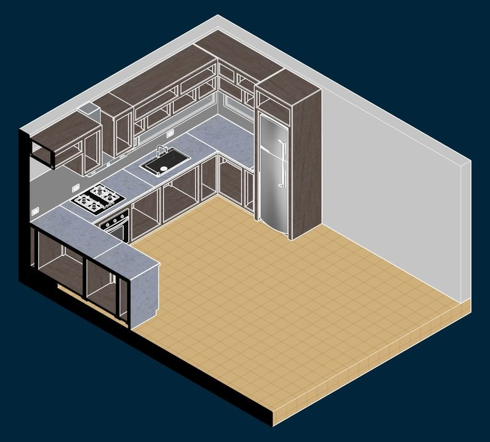
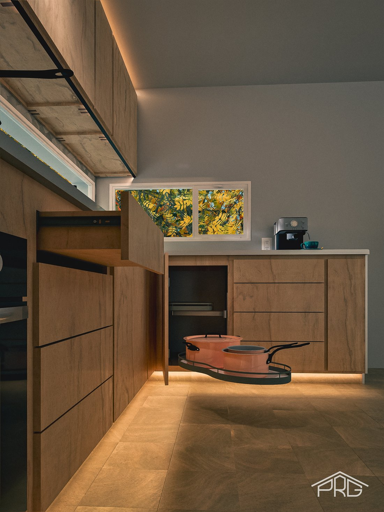
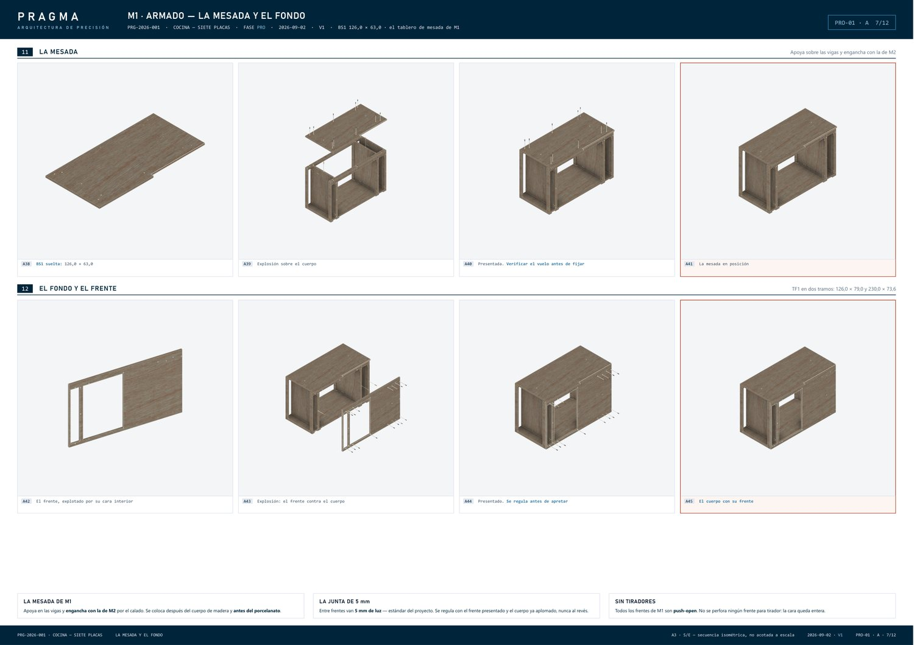
El mismo mueble que se modeló, se renderizó y se documentó — construido.
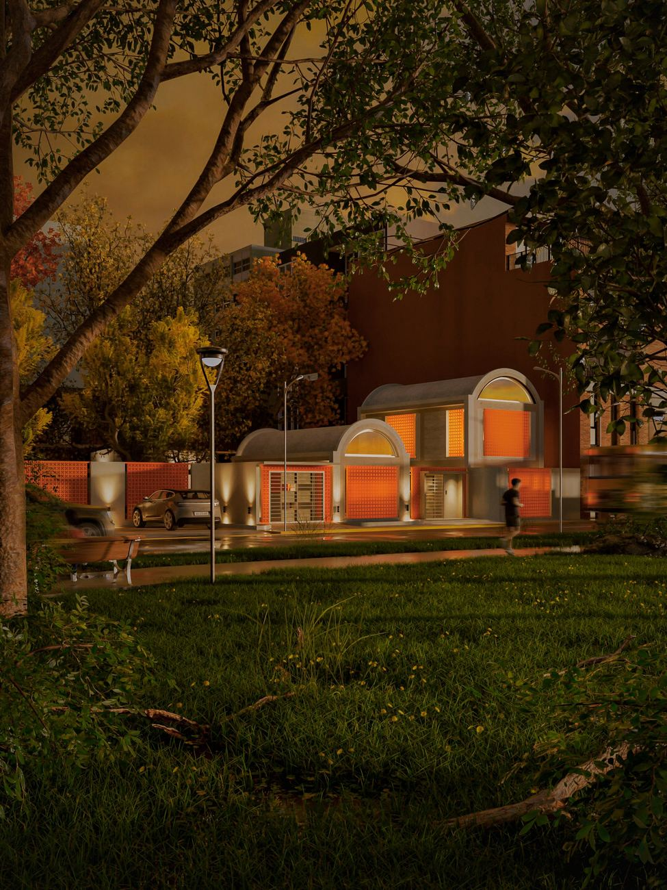
Un estudio de vivienda construido alrededor de celosías de ladrillo perforado y un esquema de iluminación nocturna — una exploración temprana de volumetría y contraste de materiales de la FADU, retrabajada después con mi metodología actual de diseño y render.